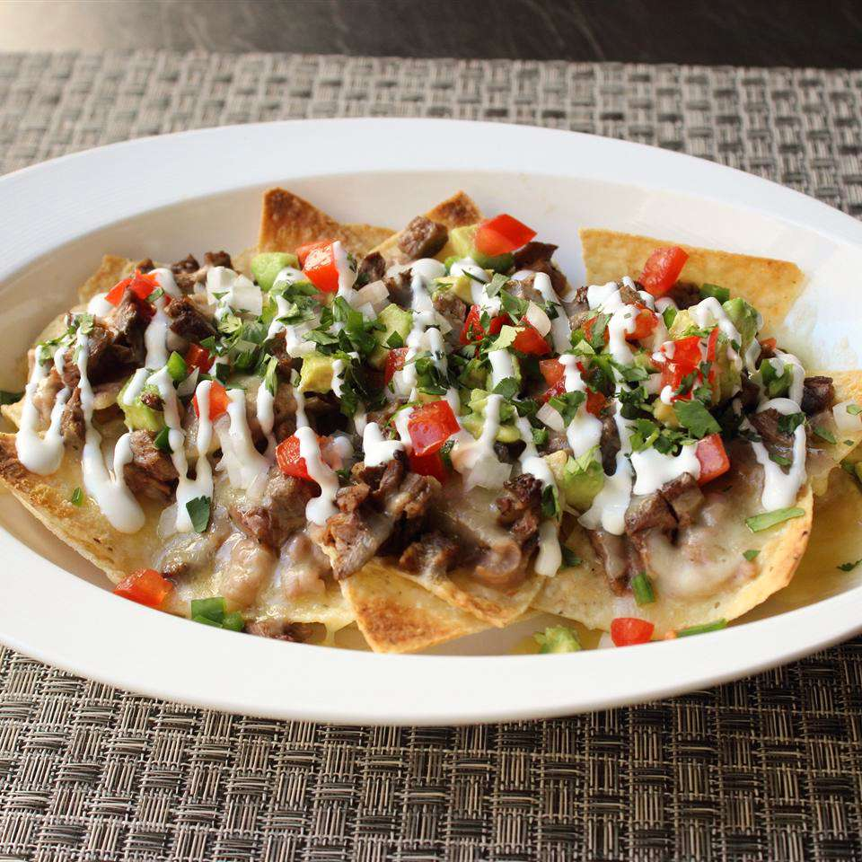

Super Deluxe Steak Nachos

Introduction
These steak nachos are one of my all-time favourite party foods.
For big games or special events, these nachos should get serious consideration for formulating your snack line-up.
I recommend serving this with hot sauce on the side, and lots of beer!
Ingredients
Steak:
- 1 (1 1/2-pound) skirt steak or flap steak
- 1 teaspoon salt
- 1 teaspoon freshly ground black pepper
- 1/2 teaspoon ground dried chipotle pepper
- 1 tablespoon vegetable oil
Beans:
- 2 tablespoons bacon fat
- 1 yellow onion, diced
- 1 teaspoon salt, divided
- 1/2 teaspoon dried oregano
- 2 (15 ounce) cans pinto beans, rinsed and drained
- 1 1/2 cups water or chicken broth, plus more as needed
Nachos:
- 1 (14 ounce) bag corn tortilla chips
- 12 ounces shredded Cheddar cheese
- 12 ounces shredded Monterey Jack cheese
- 2 ripe tomatoes, chopped, or more to taste
- 1 avocado - peeled, pitted and diced
- 1/2 cup chopped white onion, or to taste
- 1 jalapeño pepper, seeded and minced
- 1/2 cup sour cream, for topping
- 1/2 cup chopped fresh cilantro
Steps
To cook the steak:
- Season both sides of steak with salt and pepper. Heat oil in a skillet over medium-high heat. Cook steak, turning occasionally, to medium doneness, about 6 minutes per side. An instant-read thermometer inserted into the center should read 135 to 140 degrees F (60 degrees C). Transfer steak to a bowl and let it rest.
- Pour a splash of water into the skillet; stir to scrape up browned bits and deglaze the pan. Pour this liquid over meat. Allow meat to cool completely.
- When meat is completely cool, slice thickly (about 1/2 inch) with the grain, then cut into thinner strips. Dice by cutting into pieces against the grain. Transfer chopped steak back to the bowl; toss with the pan drippings.
To make the beans:
- Melt bacon fat over medium heat in a pot. Add onion and a pinch of salt; cook and stir until softened, 5 to 6 minutes. Stir in oregano. Add pinto beans and water. Bring back to a simmer and cook until onions are soft, about 5 more minutes. Reduce heat to low.
- Mash beans with a potato masher to your desired consistency. Add additional liquid if necessary to achieve your preferred texture. Add the remaining salt to taste. Remove from heat.
- Preheat the oven to 450 degrees F (230 degrees C).
To assemble the nachos:
- Place tortilla chips about 2 or 3 deep in a heat-proof pan. (You may need more than one pan.) Top chips with spoonfuls of beans and a generous handful of steak pieces.
- Sprinkle with grated cheese.
- Bake in the preheated oven until cheese is melted and edges start to brown, about 10 minutes.
- Scatter tomato, avocado, onion, and jalapeño over the top. Drizzle nachos with sour cream and garnish with chopped cilantro.
Home